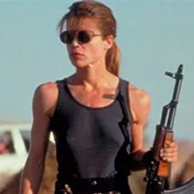
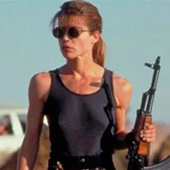

Alicia Colom
Año de estreno: 1986. Nacida para la multitarea, algo mandona, y con ese gen loco por el orden, nuestra protagonista Mónica -digo...- Alicia parte del mundo de los eventos. Pero en plena treintena, su afán de superación y no poder estar quieta ni un minuto, le hizo cambiar su profesión hacia la programación. El camino será desternillante, con momentos disparatados y muchas alegrías.


 
